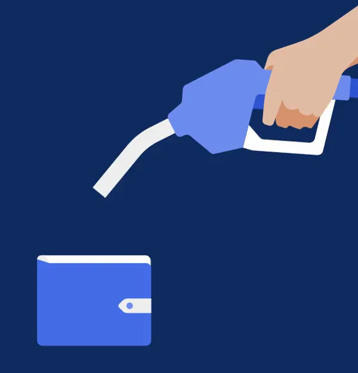
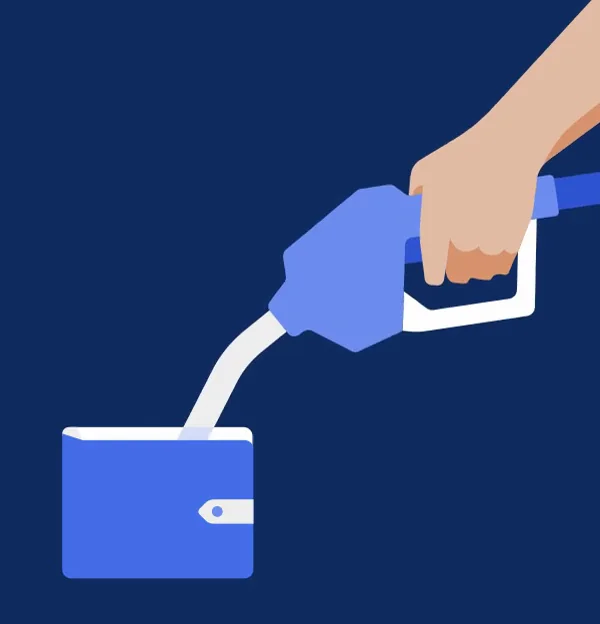
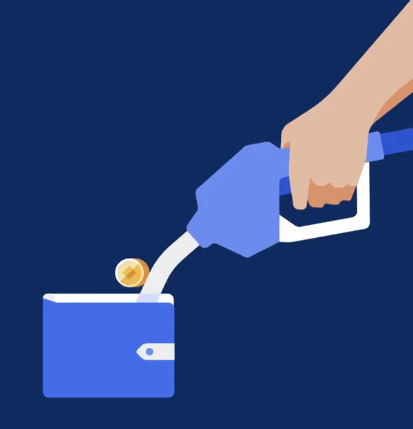
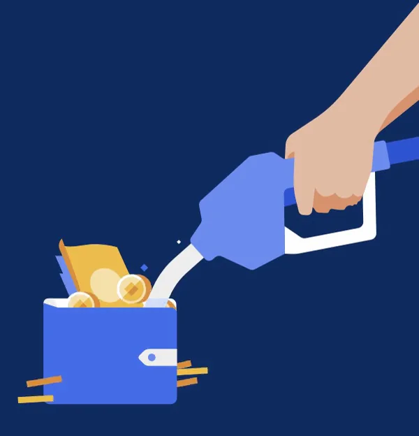
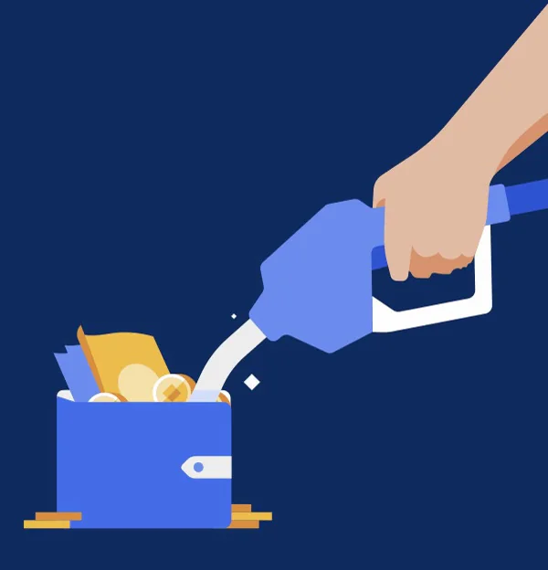

Uber / V332
钱包补充资金的插画循环
把“加油”动作借给钱包：枪口对准、金币流入、钱包充盈，动作本身解释充值含义。
构图与编排 可播放 · 可替换内容
整体编排规则示例
查看 HTML 源码
<!doctype html><html lang="zh-CN"><meta charset="utf-8"><meta name="viewport" content="width=device-width,initial-scale=1"><title>Uber｜购物袋插画循环 · sequence</title><style>html,body{margin:0;width:100%;height:100%;overflow:hidden;background:#10295a}canvas{display:block;width:100%;height:100%;object-fit:contain}</style><body data-mode="sequence"><canvas width="1000" height="600"></canvas><script src="data.js"></script><script src="common.js"></script><script src="scene.js"></script><script src="bridge.js"></script></body></html>画面元素手与加油枪弯曲枪口蓝色钱包金币与纸币
MOTION LANGUAGE
动作与构图
局部动作 · 构图规则
01
枪口先对准，钱币再进入
枪口先对准，钱币再进入规则示例
查看 HTML 源码
<!doctype html><html lang="zh-CN"><meta charset="utf-8"><meta name="viewport" content="width=device-width,initial-scale=1"><title>Uber｜购物袋插画循环 · sequence</title><style>html,body{margin:0;width:100%;height:100%;overflow:hidden;background:#10295a}canvas{display:block;width:100%;height:100%;object-fit:contain}</style><body data-mode="clip" data-start="0.3" data-end="2"><canvas width="1000" height="600"></canvas><script src="data.js"></script><script src="common.js"></script><script src="scene.js"></script><script src="bridge.js"></script></body></html>手臂与枪体作为一组移动，喷口指向钱包开口后才出现金币。金币沿短弧线落下，纸币后出现；钱包位置稳定，充盈只改变内部内容。
02
平面插画也需要明确遮挡
深蓝底与亮蓝钱包、金黄色钱币形成对比。钱币先在钱包后方升起，再被前袋遮住底部；手的肤色只占小面积，白色枪口引导方向。
03
可迁移为能量或资源补充
换主题时保留来源、流入路径和接收容器。可换成电量、积分或素材补充；图标含义需与接收对象一致，不额外堆放装饰性文字。
SEQUENCE
段落与节奏
点击段落，定位到上方编排示意。





画面参考 · 离散静帧
KEEP THE RELATIONSHIPS
制作其他主题
- 换主题时保留来源、流入路径和接收容器。可换成电量、积分或素材补充；图标含义需与接收对象一致，不额外堆放装饰性文字。
制作约束
手与加油枪 / 弯曲枪口 / 蓝色钱包 / 金币与纸币
- 把“加油”动作借给钱包：枪口对准、金币流入、钱包充盈，动作本身解释充值含义。
- 手臂与枪体作为一组移动，喷口指向钱包开口后才出现金币。金币沿短弧线落下，纸币后出现；钱包位置稳定，充盈只改变内部内容。
- 深蓝底与亮蓝钱包、金黄色钱币形成对比。钱币先在钱包后方升起，再被前袋遮住底部；手的肤色只占小面积，白色枪口引导方向。